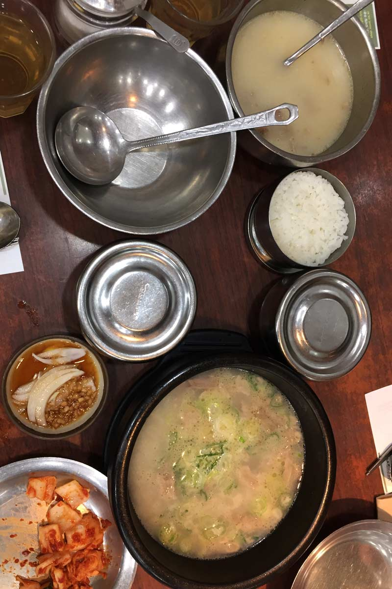
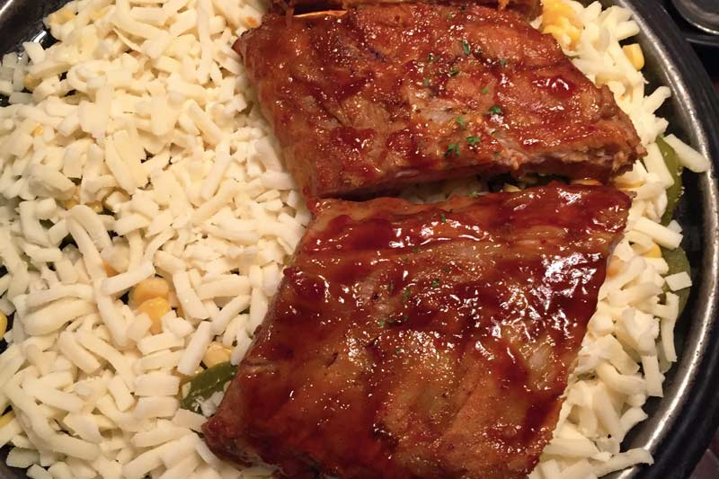
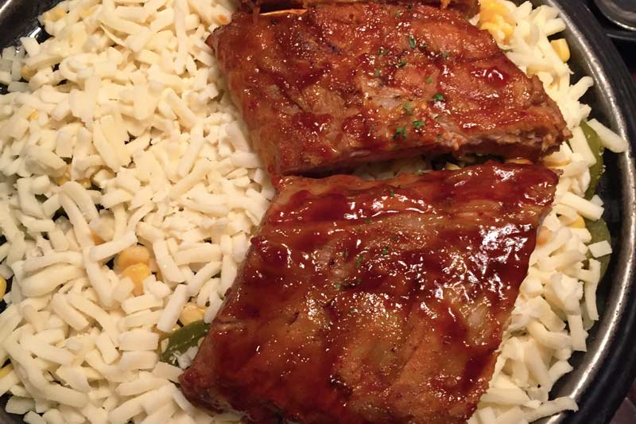
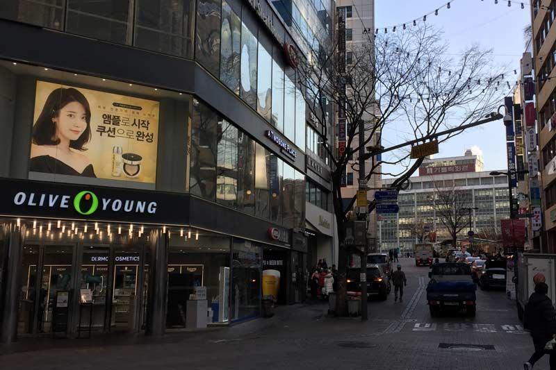
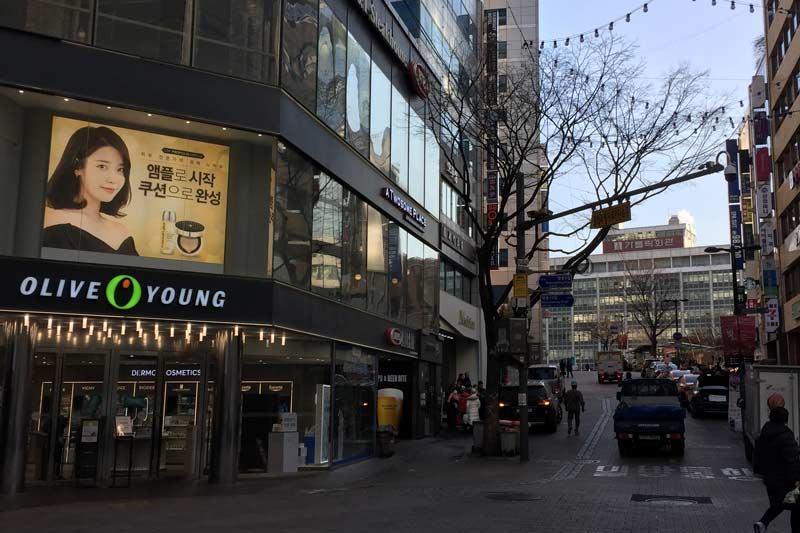
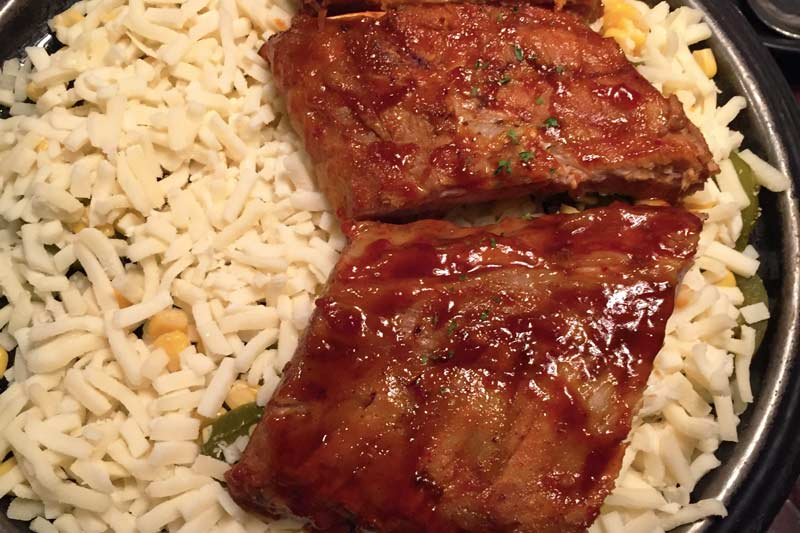
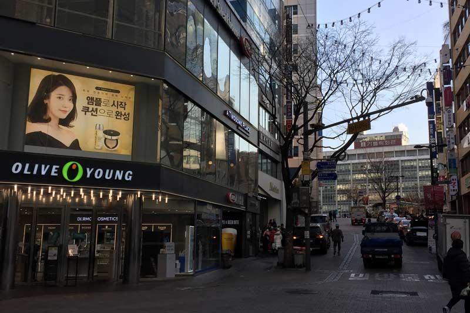

Photo Gallery



 


 


Myeongdong is one of the biggest shopping in Seoul. You can find a lot of clothing and beauty brands. Myeongdong also has great street food you can find along the street. People tend to go there during the late evening until night time. I would recommend going there if you want to buy any beauty products or clothing.
Myeong-dong is one of the primary shopping districts in Seoul. The two main streets meet in the center of the block with one beginning from Myeong-dong Subway Station (Seoul Subway Line No. 4) and the other from Lotte Department Store at Euljiro. Many brand name shops and department stores line the streets and alleys. Common products for sale include clothes, shoes, and accessories.

South Korea is known for its beauty industries especially plastic surgery. A lot of people go there just to get their nose job. Even though I am not interested in plastic surgery but I bought some skincare back. As you can see from the photo, I bought a few face mask back. The brand called 'Fila' is very famous in South Korea and other Asian countries. If you need any type of skincare, you would find all you need in South Korea.
Myeongdong always belong to top places to visit in South Korea for its abundant shopping supplies and aesthetic surrounding. Although so many skin care and beauty stores stand on Myeongdong street, offering both cheap and expensive products, each of them has their own outstanding brand names and good quality products. Some skincare brand names you can find here: Laneige, Skin food, IOPE, Innisfree, Stylenanda 3CE, Olive Young, Boots, Aritaum, Nature Republic, Primera, Etude House. For more premium brands such as Sulwhasoo, History of Whoo, Hera, Amore Pacific, your best choice is the Lotte Department Store.
From meat grilled on the table before you, to boiling hot stews, to chilies and pickles, Korean food is almost impossible not to fall in love with.
South Korea is not only known for its beauty industries but its food is also delicious. In the photo above is Korea food called Tteokbokki also known as rice cake. You need to try this or else they say you haven't been to Korea yet. Another thing you have to try in Korea is Kimchi. Kimchi is a fermented vegetable dish. Koreans normally have it as a side dish with porridge, noodles or soup. Korean food is a must try!

